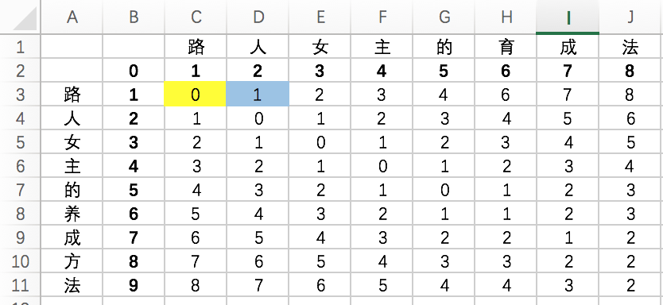
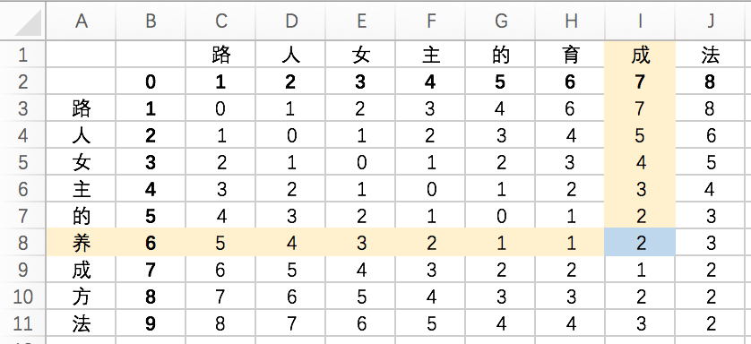

字符串相似度计算非常有用。我刚刚在自己的番组管理工具中加入了它。这样当我在添加新的动画或电影名时，它就能帮我去数据库中找找有没有相似度高的名字，以防我把同一个番组用不同的名字再填一遍。
我这里用到的算法是Levenshtein，它又叫“编辑距离”算法，是俄国科学家Vladimir Levenshtein在1965年发明的。百度上有一堆介绍它的文章。如果你会PHP的话，那么从4.0.1版本起有一个叫 levenshtein() 的函数可供你直接使用。详细的API介绍在这里。我这里只是想把它用自己的大白话再说一遍，并且在后面尝试给出JAVA代码。
我们现在有两个字符串（没错，我是死肥宅）：
String strA = "路人女主的育成法";
String strB = "路人女主的养成方法";
首先把它们放到表格中并且编号。如图。

接下来，我们要在表格中填满数字，填满后，相似度也就可以算出来了。

先来看图中黄色单元格，格子上面、左面和左上的数字分别是1，1，0。再来看这个格子上面和左面的字符，都是“路”字，所以我们把上面和左面的数字加1，左上角的数字不变。于是现在我们得到了2，2，0这三个数字。把这三个数字中最小的一个，也就是0写在单元格中。这个格子就算填完了。
再接下来看右面的蓝色格式，它的上、左和左上也有三个数字（其中左面的数字是我们刚刚填上的），分别是2、0、1，再来看格子上面和左面对应的字符，分别是“人”和“路”字，是两个不同的字符。所以我们把这三个数字分别加1，就得到了3、1、2这三个数字。把这三个数字中最小的一个，也就是1填到蓝格子中就算完成了。
以此类推，就可以把整个表格填完。这些数字代表什么？代表一个字符变成另一个字符串的代价（距离）。代价越高，两个字符串间的相似度就越低。 我知道你是不太明白。看下面这张图。

图中蓝格中的数字是2，上面格子中的字符是“成”字，左面的是“养”字。它代表，要把上面的字符串“路人女主的育成”变成左面的字符串“路人女主的养”的代价是2。也就是说只要做2步操作，它们就会完全相同： 1、把“育”字改成“养”字； 2、再把“成”字删掉。
这张表格的最后一个数字，也就是右下角的数字，就是这两个字符串间互相转换的代价。
相似度=1-右下角的数字/两个字符串中最长串的字符数。
在这个例子中，右下角的数字是2，最长的字符串长度是9（左面的那个），相似度=1-2/9=0.78。原理懂了，代码也就不难写了。